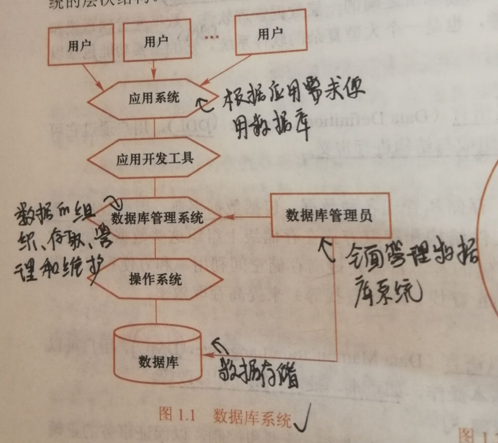
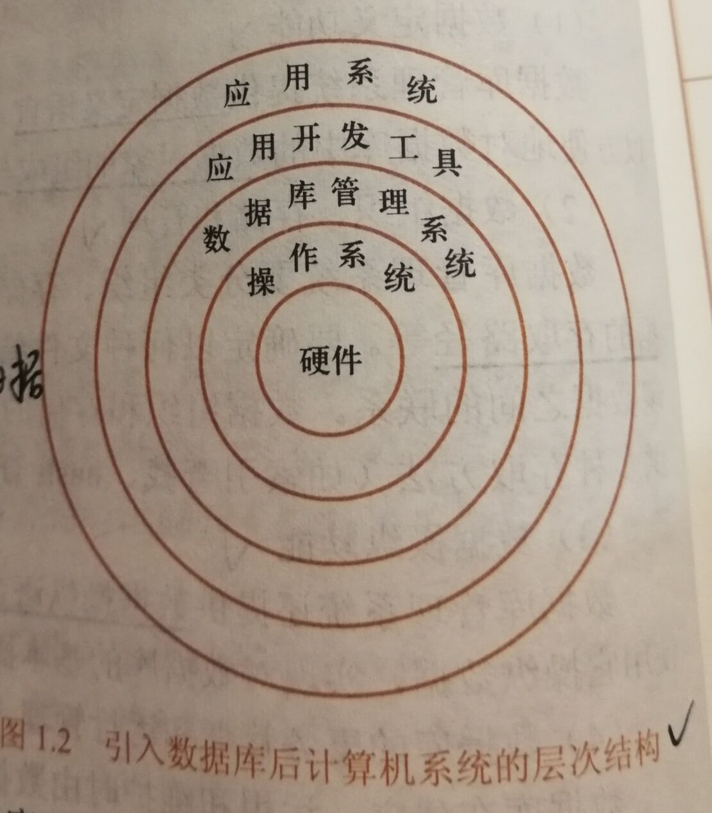
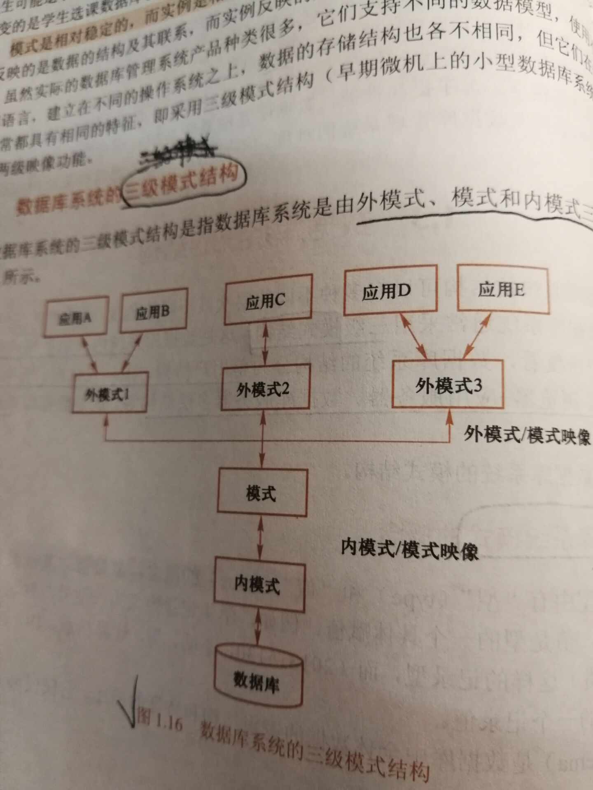

数据库复习（mysql）
导语 复习计划
1.教材420页（9天，50页/day）
2.刷educoder的题38道（13天，3道/day）
3.扩展学习其他数据库进行类比（SQLserver、MongoDB、oracle、sqlite、postPreSQL、Redis，8天，1个/day）
第一章 绪论
1.1数据库系统概述
1.四个基本概念
数据：数据库存储的对象。数据和语义是不可分开的。
数据库：存放数据的仓库。数据库是长期存储在计算机内、有组织的、可共享的大量数据的集合，具有较小冗余度、较高数据独立性、易扩展性。
数据库管理系统：组织和存储数据、高效获取和维护数据。主要功能包括：
数据定义功能：数据库定义语言DDL
数据组织、存储和管理
数据操纵语言DML
数据库事务管理和运行管理
数据库的建立和维护功能
数据库系统：=数据库+数据库管理系统+应用程序+数据库管理员，存储、管理、处理、维护数据的系统。

2.数据管理技术的发展
3.数据库系统的特点
1.2数据模型
*数据模型描述数据、组织数据、操作数据。
1.两类数据模型
用于设计数据库
（1）逻辑模型：数据库管理系统实现
（2）物理模型
2.概念模型
（1）基本概念：
实体：客观具有标识的事物
属性：实体具有的特征
码：唯一标识实体的属性集
实体型：实体名+属性名
实体集
联系：
一对一：1个A对应1个B，1个B对应1个A
一对多：1个A对应1个B，1个B对应n个A
多对多：n个A对应n个B，n个B对应n个A
（2）概念模型的表示方法：E-R模型
3.数据模型的组成要素
数据结构 + 数据操作 + 数据的完整性约束条件
4.常用数据模型
层次模型
网状模型
关系模型
面向对象数据模型
对象关系数据模型
半结构化数据模型
5.层次模型
（1）数据结构：树形结构，1个结点=1个记录类型=n个字段，适合于一对多关系。
（2）数据操作：增删改查。
（3）完整性约束条件：插入操作，没有双亲的结点不能插入；删除操作，删除双亲结点，则其子女结点也会同时被删除。
6.网状模型
（1）数据结构：图形结构，子女结点和双亲结点关系是不唯一的，因此需要为关系命名并指出子女结点和双亲结点。
7.关系模型
（1）数据结构：二维表
（2）数据操作：增删改查
（3）完整性约束条件：实体完整性、参照完整性、用户定义完整性。
（4）一些关系模型的术语：
1.3数据库系统的结构
1.模式的概念
模式：数据的型
实例：模式的一个具体值
2.三级模式结构

（1）模式：是全体数据的逻辑结构和特征的描述，是所有用户公共的数据视图。一个数据库只有一个模式。